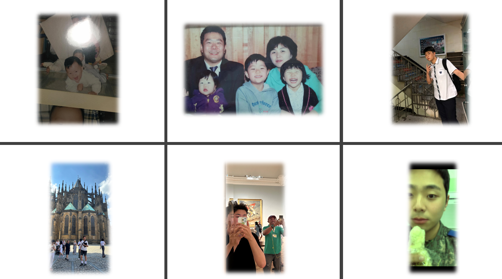
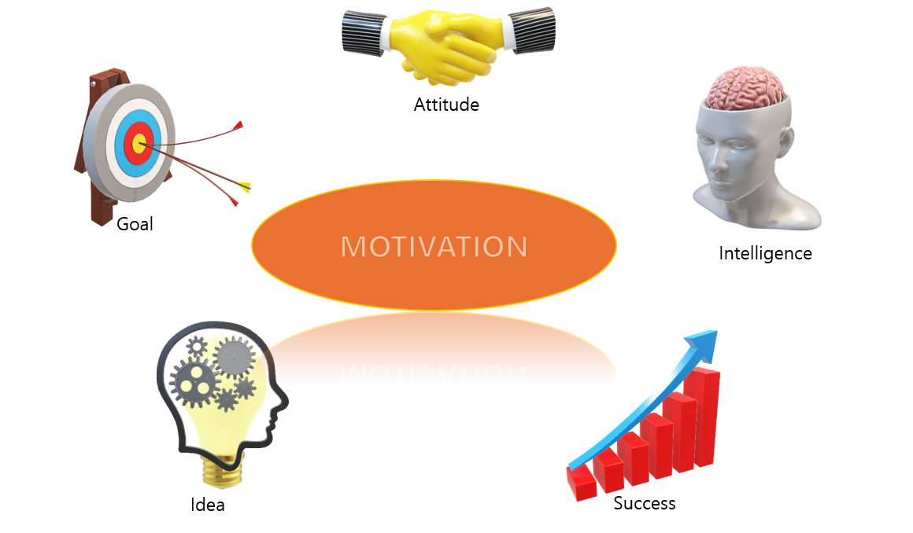
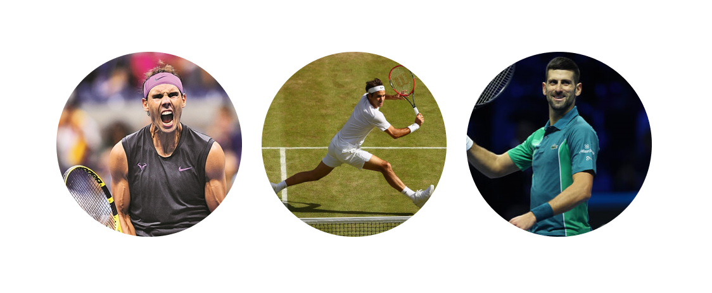

CHU JONG HOON
introduce
Hello everyone, I am a student in the computer engineering department of Kangwon National University. I made a web homepage with the web programming skills I learned from my favorite professor, Professor Kim A-wook. I realized that the web like 'Netflix, YouTube, Naver, Google' is very well made by showing that the web is visualized even though studying computers is clichéd. At the same time, I'm wondering how the web to which data is connected works, not just to create a web, and how this lot of data appears on the web. I would like to give this honor to Professor Kim A-wook for giving me a fun and fruitful class, and I want to become a computer master like you.
Introduction to the website
1. In 'HOME', there is a brief introduction to the website along with my introduction.
2. 'EXPERIENCE' has an introduction to my chronology and motivation.
3. In 'INTERESTS', there is an introduction about my hobbies and things that I have interested in.
4. 'ETC' is written about my social media address and things to revise on my homepage in the future.
Chronicle
These are my childhood, childhood, adolescence, and myself after the military.
Motivation
Motivation comes from a lot of experience. Goals, attitudes, success, performance, ideas, and intelligence are essential elements of my life.
·Goal
My goal is to be a computer programmer through security or network operation. After watching the movie 'Imitation Game' about Allenturing, I became interested in security and hacking. The fight between a shield that never breaks through and a spear that breaks through everything must be a material that all humans will be interested in. I think security and hacking are also very close to this.
· Attitude
Attitudes change many things. Depending on what attitude you have, your perspective on things will also change. Our lives will be divided in various directions depending on how we view many concerns about study or life. To those who have lived before us in the past or intellectuals of this era, we try to live with the right attitude while looking at the answer close to the correct answer.
· Intelligence
I think intelligence is a gift given to us humans. Intelligence shines only when you keep using it. Some of you may have heard of the saying, "You're smart, but you don't try." Effort is also intelligence and talent. Those who try are given the ability to seize many opportunities. I also try to develop the power to seize opportunities when opportunities arise.
· Success
I think success is an achievement achieved through various failures or experiences. Without success, I think further progress is difficult. It is often said that failure is the mother of success. However, through success in the process, I gain a sense of accomplishment, and the magnitude of that success greatly affects me, whether small or large.
· Idea
There is no idea to sit still and relax. Ideas always live and move actively. People with new ideas burn with passion. Living for an idea and giving your life to it is the motivation and the driving force of life.
Tennis
Tennis is my favorite hobby and exercise. From the left, it's Nadal, Federer, Djokovic and they are my favorite tennis players. Whenever I can't concentrate on studying computer, I watch tennis videos, but I take turns looking at these three players with admiration. Tennis is a difficult sport, but it is a sport with that charm that cannot be escaped. I hope everyone falls in love with tennis.